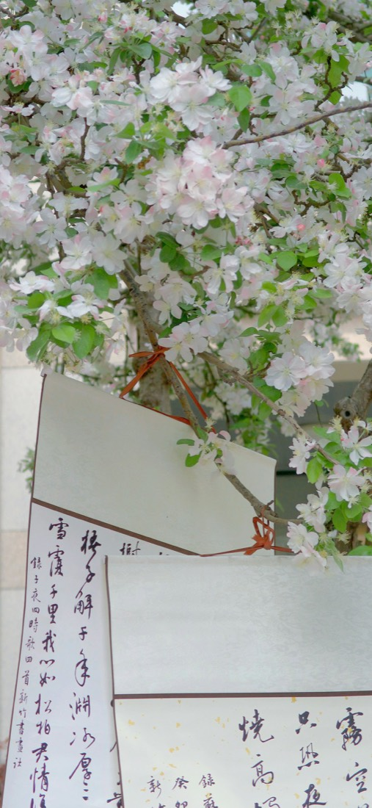
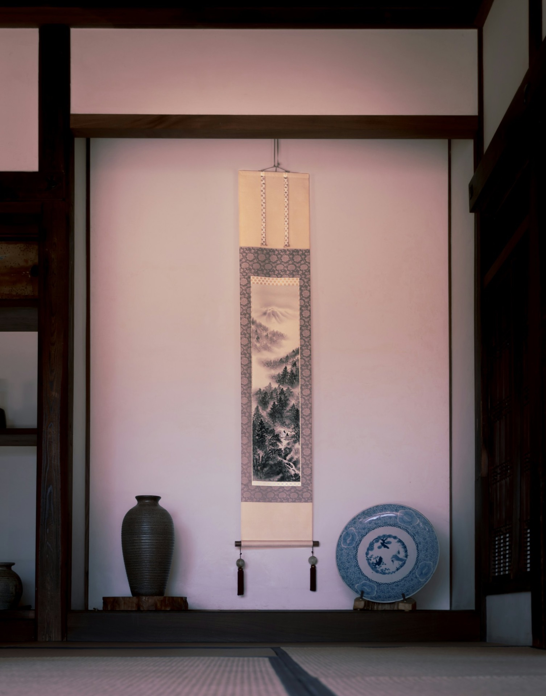
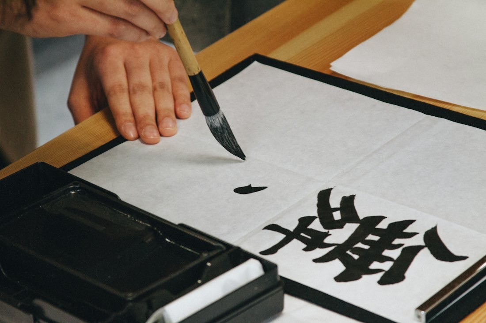
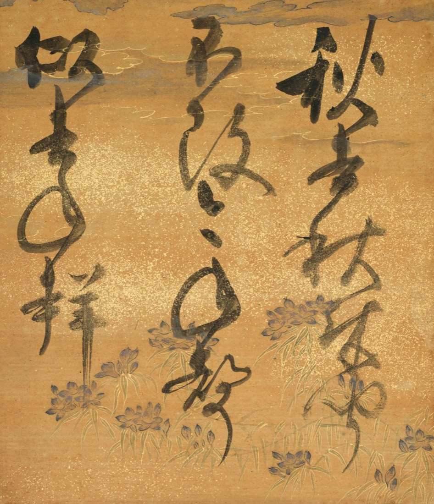
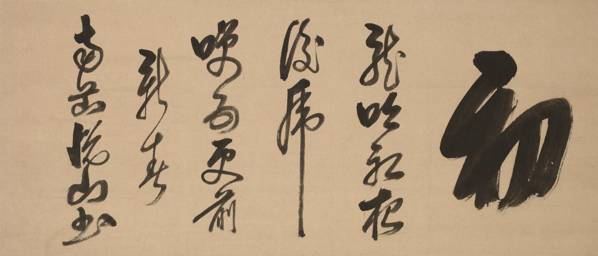

表装・軸装
掛け軸、額、屏風、衝立、巻子、和綴本。

美術表装・表具師 名古屋市北区大杉町
表具師が手作業で、心を込めてお仕立てします。表装、軸装、額装、屏風から、古書画の修理・修復まで。
掛軸のしくみ
一幅を、
ひらく。
裂地と和紙を、本紙と継ぎ合わせて仕立てます。
軸装（機械表具の基本サイズ）15,000円から・消費税別
掛軸のイメージです。裂地や本紙は架空のものです
裂地と和紙を正麩糊で肌裏し、古糊で増裏をして本紙と継ぎ合わせ、最後に古糊で総裏をして、板に張り込みます。数か月間、加湿と乾燥を繰り返して狂いを少なくしてから、掛軸に仕上げます。
筒井郁雄は名古屋の武智整古堂で18年間修行し、昭和55年に独立。筒井俊雄は京都の伊藤竹香堂で6年間修行し、名古屋城本丸御殿障壁画の復元工事にも参加しました。

掛け軸、額、屏風、衝立、巻子、和綴本。

本紙（絹本・紙本）の染み抜き・洗い、古書画の修理。

講師は筒井俊雄。星が丘テラスで、小作品の裏打ちから掛け軸まで。

消費税別の参考価格です。お客様のご注文ごとにお見積りします。価格は現在のホームページの表示をもとにしています。
| 出店 | 星が丘テラスEAST 3階 COMMUNITY ROOM（偶数日曜日） |
|---|---|
| 対象地域 | 名古屋市・尾張地域ほか、他地域もご相談ください |
表装・修復のご相談、表装教室のお申し込みは、お電話・メールで。